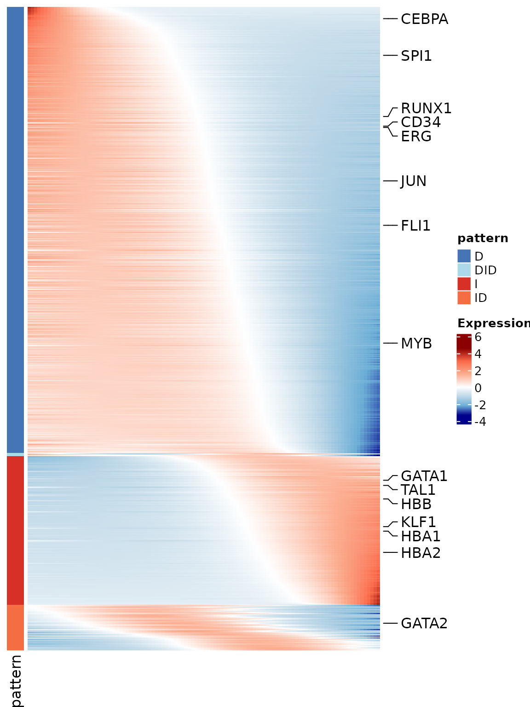
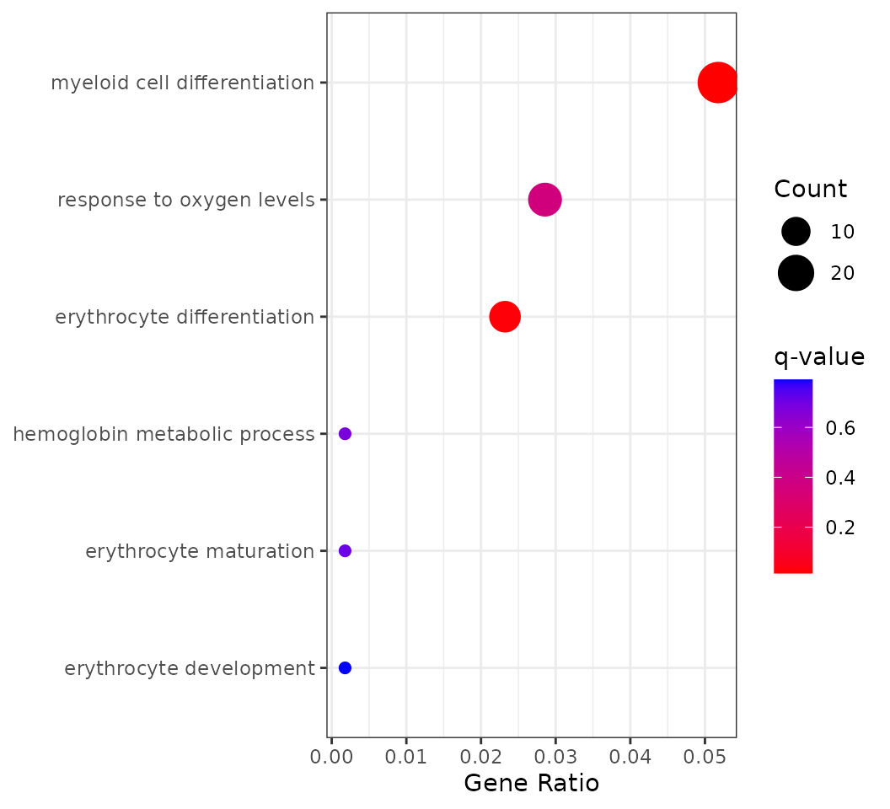
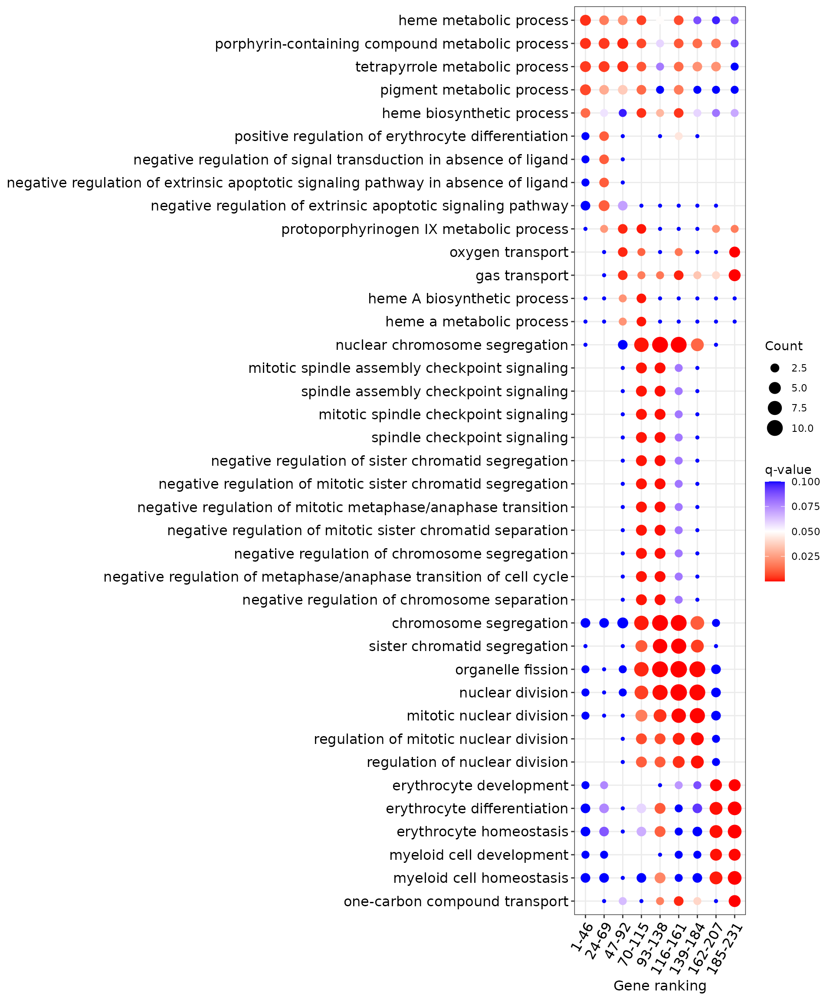
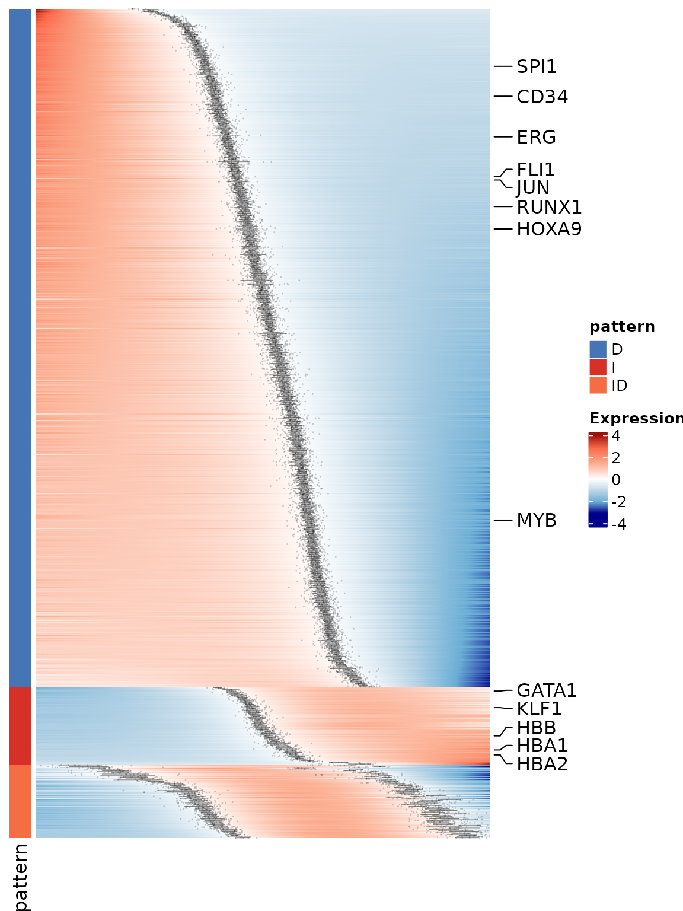

Get started with Pseudotimecascade
Pseudotimecascade_tutorial.RmdExample: Pseudotimecascade Analysis on human bone marrow samples
This tutorial introduces the Pseudotimecascade R
package, a toolkit for modeling gene expression dynamics along
pseudotime trajectories in single-cell RNA-seq data. The method
identifies genes with switch-like temporal expression patterns and
supports downstream biological interpretation through GO enrichment
analysis.
We demonstrate the complete workflow starting from a Seurat object
with clustering and dimensionality reduction. The key steps include: •
Computing pseudotime using TSCAN or other tools • Fitting
gene trajectories with fitData() • Classifying gene
patterns with genePattern() • Visualizing dynamic genes
with heatmaps • Performing enrichment analysis (group-based and
bin-based) • Integrating multi-sample results to assess
reproducibility
The pipeline is modular and compatible with any pseudotime method, as
long as cells are assigned a numeric pseudotime value. While we
illustrate the process using TSCAN and specific marker
genes from hematopoietic lineages, the same framework can be applied to
other systems and datasets.
All steps shown here are directly reproducible using your own Seurat object. Replace file names and cluster IDs as needed to fit your biological context.
Let’s get started.
Step 1: Load data and generate pseudotime for cells
In this tutorial, we start from a processed Seurat object that contains gene expression, and dimensionality reduction (e.g., PCA, UMAP). From this object, users can apply a trajectory inference method such as TSCAN, Monocle3, Slingshot, or RNA velocity to obtain a biologically meaningful ordering of cells along pseudotime. The only requirement is that each cell receives a numeric pseudotime value, which defines its position along the trajectory. Using this ordering, the expression matrix can be arranged so that rows correspond to genes and columns correspond to cells ordered by pseudotime, with expression values log-normalized and scaled for comparability across genes. Here, we include a pre-processed example object with pseudotime values, but in practice users can start from their own scRNA-seq data and apply the same workflow with any pseudotime inference method.
Step 2: Fit pseudotime expression using
Pseudotimecascade
With cells ordered by pseudotime and the corresponding expression
matrix prepared, we next call the core fitting function
fitData(). Here expr_df is obtained from the
RNA@data slot of the Seurat
object, with columns restricted to the cells that have been sorted by
their pseudotime values. This gives a gene-by-cell expression matrix
where each row is a gene and each column is a cell ordered along the
trajectory, effectively capturing the pseudo-temporal dynamics of gene
expression.
The pseudotime vector pt provides the numeric position
of each cell along this trajectory and must be aligned with the same
cell order used in expr_df. The argument
new_data specifies the pseudotime grid on which predictions
will be made, and mc.cores sets the number of parallel processes. The
output fit_data_list contains the fitted expression
trajectories, estimated switch points, and statistical metrics that form
the basis for downstream pattern classification and enrichment
analysis.
# Ensure cells are ordered by pseudotime
cells_order <- rownames(obj@meta.data[order(obj$tscan_pseudotime), ])
expr_df <- obj@assays$RNA@data[, cells_order]
# Fit gene curves
fit_data_list <- fitData(
as.matrix(expr_df),
pt = obj$tscan_pseudotime[cells_order],
new_data = data.frame(pt = seq(1, nrow(obj@meta.data))),
mc.cores = 4
)Tip: Because this step involves fitting curves for thousands of genes, it can be computationally intensive; for example, running with mc.cores = 4 typically requires around three hours for one thousand genes.
Step 3: Classify gene patterns
Once smooth trajectories have been fitted, the next step is to
identify the major temporal expression patterns across genes. The
function genePattern() takes the fitted expression matrix
from fitData() and classifies each gene into a discrete
category, such as increasing, decreasing, or biphasic.
These categories provide an intuitive summary of how genes behave along pseudotime, highlighting switch-like dynamics or more complex expression changes. The output is a data frame where each row corresponds to a gene and columns provide its assigned pattern, the estimated switch point (if applicable), and a ranking statistic for visualization.
In this tutorial, we store the fitted expression matrix, the list of
fit results, and the gene-level pattern assignments together in a single
object (stip_list), which will serve as the input for
downstream heatmaps and enrichment analyses.
gene_group <- genePattern(as.data.frame(fit_data_list[["data"]]))
stip_list <- list(
expr_df = expr_df,
fit_data = fit_data_list,
gene_group = gene_group
)Step 4: Select genes and plot Pseudotimecascade heatmap
To make the visualization clearer and computationally efficient, we do not plot all genes at once. Instead, we select the top 1,000 most significant genes based on their q-values from the fitting step, and then subsample cells by keeping every tenth cell along pseudotime. This produces a reduced expression matrix that still preserves the global dynamics but avoids overplotting.
In addition to these filtered genes, we also highlight a set of manually chosen marker genes relevant for hematopoietic differentiation. These marker genes are annotated on the heatmap, making it easier to track known regulators and to interpret the overall expression trends in a biological context.
The function HeatmapSTIP() automatically orders genes by
their assigned expression pattern and estimated switch point location,
and produces a heatmap where each row is a gene and each column a
pseudotime-sampled cell. This view provides a compact summary of dynamic
gene expression programs along the trajectory.
library(Pseudotimecascade)
stip_list <- readRDS(
system.file("extdata", "stip_list.rds", package = "Pseudotimecascade")
)
# Match and sort gene pattern labels
hsc_genes <- c('ERG', 'HOXA5', 'HOXA9', 'HOXA10', 'LCOR', 'RUNX1', 'SPI1', "CD34")
cmp_genes <- c('GATA2', 'CEBPA', 'GATA1', 'SPI1', 'EKLF', 'FLI1','ZFPM1',
'TAL1', 'GFI1', 'JUN', 'EGR1', 'EGR2', 'NAB2')
ery_genes <- c('GATA1', 'TAL1', 'KLF1', 'LDB1', 'ZFPM1', 'ZBTB7A', 'MYB', "HBB", "HBA1", "HBA2")
mon_genes <- c('SPI1', 'IRF8', 'KLF4', 'ERG1', 'JUN', 'JUNB', 'STAT1', 'STAT3', 'CEBPB')
marked_genes <- unique(c(hsc_genes, cmp_genes, ery_genes))
# Plot heatmap
p <- HeatmapSTIP(x = stip_list$fit_data,
gl = marked_genes,
annotation = as.matrix(stip_list$gene_group)[, "pattern"])
ComplexHeatmap::draw(p)
Step 5: Enrichment analysis
We identify enriched biological processes for pseudotime-dynamic genes using two complementary approaches. Group-based enrichment applies GO analysis to genes grouped by temporal expression pattern (e.g., “I”, “D”, “ID”), while bin-based enrichment uses a sliding window along switch points to detect transient functional signals. Both approaches are run on the same set of top-ranked genes (e.g., top 1000 by q-value), ordered by pattern and switch point.
5.1: Group-Based Enrichment
Group-based enrichment in Pseudotimecascade is carried
out using the enrichPattern() function, which is
specifically designed for temporal gene expression analysis. Given a
gene grouping table produced by genePattern(), users can
call enrichPattern() to test for functional
overrepresentation within one specific pattern of interest (e.g., “I” or
“D”).
This function automatically extracts the genes belonging to the
chosen pattern and performs GO enrichment against a user-defined
background (the universe). In practice, the universe is set
to all genes detected in the dataset after preprocessing, ensuring that
enrichment is interpreted relative to the expressed gene set. This
analysis links temporal gene expression patterns to biological
processes, highlighting which functions are enriched among dynamically
regulated genes.
library(Pseudotimecascade)
library(dplyr)
library(clusterProfiler)
# Order gene pattern labels
ggene_group <- stip_list[["gene_group"]][rownames(stip_list[["fit_data"]][["data"]]), ]
gene_group <- gene_group[order(gene_group$pattern, gene_group$rank_point), ]
# Perform GO enrichment for each pattern
enrich_group_list <- list()
for (gp in unique(gene_group$pattern)) {
enrich_group <- enrichPattern(gene_group, gp, "human", universe = universe)
# Compute enrichment ratio
enrich_group@result$EnrichRatio <- with(enrich_group@result, {
(as.numeric(sub("/.*", "", GeneRatio)) * as.numeric(sub(".*/", "", BgRatio))) /
(as.numeric(sub(".*/", "", GeneRatio)) * as.numeric(sub("/.*", "", BgRatio)))
})
enrich_group_list[[gp]] <- enrich_group
}
# Save results
saveRDS(enrich_group_list, "STIP_group_enrichment.rds")Tip: You may later visualize these results as shown in Step 6.1.
5.2: Bin-Based Enrichment
Bin-based enrichment is implemented in Pseudotimecascade
through the function compareEnrichBin(). Unlike group-based
enrichment, which aggregates all genes in a pattern, this method applies
a sliding window along pseudotime within each pattern. The window is
defined by two parameters: bin.width (the size of each window along
pseudotime) and stride (the step size between windows). This allows us
to detect biological processes that are transiently enriched at specific
points in the trajectory.
In the example below we demonstrate how to run
compareEnrichBin() on genes assigned to the
"I" pattern. The background gene set
(universe) is the same as in the group-based analysis.
# Example: perform bin-based enrichment on "I" pattern genes
pattern <- "I"
bin.width <- 0.2
stride <- 0.1
genes_bin_enrich <- compareEnrichBin(
gene_group,
pattern = pattern,
bin.width = bin.width,
stride = stride,
species = "human",
ont = "BP",
universe = universe
)
# Compute enrichment ratio
genes_bin_enrich@compareClusterResult$EnrichRatio <- with(genes_bin_enrich@compareClusterResult, {
(as.numeric(sub("/.*", "", GeneRatio)) * as.numeric(sub(".*/", "", BgRatio))) /
(as.numeric(sub(".*/", "", GeneRatio)) * as.numeric(sub("/.*", "", BgRatio)))
})
# Save results
saveRDS(genes_bin_enrich, "STIP_bin_enrichment.rds")Tip: While we demonstrate bin-based enrichment using the
"I" pattern here, the full analysis can be performed across
all expression patterns. Visualization of bin-based enrichment in Patten
"I" is shown in Step 6.2.
Step 6: Visualization of GO Enrichment Results
After identifying gene patterns using Pseudotimecascade,
we visualize enriched GO terms associated with each pattern. Here we
demonstrate both group-based and
bin-based enrichment results.
6.1: Group-Based Enrichment Visualization
Group enrichment analyzes the overrepresentation of GO terms among
genes from a specific pattern (e.g., "I", "D",
"ID", etc.). In Pseudotimecascade, this is
implemented through the enrichment functions described in Step 5, and
the results can be visualized to highlight key GO terms.
Here we demonstrate how to visualize the enrichment results for the
"I" pattern, using manual selection of GO terms.
library(Pseudotimecascade)
library(clusterProfiler)
library(ggplot2)
# Load enrichment result
obj_enrich <- readRDS(system.file("extdata", "STIP_group_enrichment.rds", package = "Pseudotimecascade"))
# Pattern of interest (e.g., "I" or "D")
group <- "I"
group_enrich <- obj_enrich[[group]]
# Select GO terms
terms <- c("GO:0048821", "GO:0030218", "GO:0030099", "GO:0020027", "GO:0043249", "GO:0070482")
group_enrich@result <- group_enrich@result[group_enrich@result$ID %in% terms, ]
group_enrich@result <- group_enrich@result[order(group_enrich@result$qvalue), ]
plot_data <- subset(
group_enrich@result,
ID %in% terms
)[order(group_enrich@result$qvalue), ]
plot_data$GeneRatio_num <- sapply(plot_data$GeneRatio, function(x) eval(parse(text = x)))
# plot
p <- ggplot(plot_data, aes(GeneRatio_num, reorder(Description, GeneRatio_num))) +
geom_point(aes(size = Count, color = qvalue)) +
scale_color_gradient(low = "red", high = "blue", name = "q-value") +
scale_size(range = c(2, 8), name = "Count") +
labs(x = "Gene Ratio", y = NULL) +
theme_bw()
p This plot shows GO enrichment for genes with increasing expression along pseudotime. Dot size indicates the number of genes (Count), the x-axis shows the fraction of increasing genes annotated to each GO term (GeneRatio), and color reflects enrichment significance (q-value).
Tip: In addition to manual selection, users may also automatically display the top N enriched GO terms ranked by q-value for unbiased exploration.
6.2: Bin-Based Enrichment Visualization
In addition to group-wise enrichment, Pseudotimecascade
supports bin-based enrichment, which evaluates how functional categories
appear at different pseudotime windows within each expression pattern.
This approach helps reveal transient biological processes that may only
be enriched at specific points along the trajectory.
library(dplyr)
# Load bin-based enrichment result
genes_bin_enrich <- readRDS(system.file("extdata", "STIP_bin_enrichment.rds", package = "Pseudotimecascade"))
pattern <- "I"
n <- 5
qval <- 0.05
bin_enrich <- genes_bin_enrich[[pattern]]
tmp_enrich <- bin_enrich@compareClusterResult %>%
group_by(Cluster) %>%
filter(qvalue <= qval) %>%
slice_min(order_by = qvalue, n = n) %>%
ungroup()
tmp_enrich <- tmp_enrich[order(tmp_enrich$Cluster, tmp_enrich$qvalue), ]
bin_enrich@compareClusterResult <- bin_enrich@compareClusterResult[bin_enrich@compareClusterResult$ID %in% unique(tmp_enrich$ID), ]
bin_enrich@compareClusterResult$Description <- factor(bin_enrich@compareClusterResult$Description, levels = rev(unique(tmp_enrich$Description)))
bin_enrich@compareClusterResult[bin_enrich@compareClusterResult$qvalue>2*qval, "qvalue"] <- 2*qval
p <- ggplot(bin_enrich@compareClusterResult, aes_string(x = "Cluster", y = "Description", size="Count")) +
geom_point(aes_string(color = "qvalue")) +
scale_color_gradient2(low="red", high="blue", midpoint=0.05, breaks=c(0.05)) +
DOSE::theme_dose(font.size = 12) +
labs(y="", x="Gene ranking") +
theme(axis.text.x = element_text(angle = 60, hjust=1))
p
The x-axis shows pseudotime bins (clusters of genes grouped by their switch point location), and the y-axis lists GO terms that are significantly enriched within each bin. Dot size reflects the number of genes (Count) annotated to each GO term, while dot color indicates enrichment significance (q-value). For clarity, only the top 5 GO terms per bin with q-value ≤ 0.05 are shown. This visualization highlights biological processes that are transiently enriched at different stages along pseudotime.
Tip: You can adjust pattern, n, and qval_cutoff to explore different enrichment structures or other gene dynamics.
Step 7: Multi-sample Pseudotimecascade Analysis
In this section, we demonstrate how to integrate
Pseudotimecascade results across multiple samples to
identify reproducible gene patterns and switch point trends. This allows
robust functional inference across donors or replicates.
We first merge the gene-level trends across samples, resulting in a
list containing average pseudotime expression (mean_expr),
consensus pattern labels (mean_pattern), and sample-wise
switching intervals (df_switch_point). These outputs are
used for enrichment analysis and heatmap visualization.
Below we visualize selected lineage marker genes from the top 1000
most significant genes, using the MSHeatmapSTIP()
function.
library(Pseudotimecascade)
library(ComplexHeatmap)
# Load STIP results from multi-sample integration
gene_mean_list <- readRDS(system.file("extdata", "stip_list_multi_sample.rds", package = "Pseudotimecascade"))
# Define marker genes
hsc_genes <- c('ERG', 'HOXA5', 'HOXA9', 'HOXA10', 'LCOR', 'RUNX1', 'SPI1', "CD34")
cmp_genes <- c('GATA2', 'CEBPA', 'GATA1', 'SPI1', 'EKLF', 'FLI1','ZFPM1',
'TAL1', 'GFI1', 'JUN', 'EGR1', 'EGR2', 'NAB2')
ery_genes <- c('GATA1', 'TAL1', 'KLF1', 'LDB1', 'ZFPM1', 'ZBTB7A', 'MYB', "HBB", "HBA1", "HBA2")
marked_genes <- unique(c(hsc_genes, cmp_genes, ery_genes))
# Draw heatmap
p <- MSHeatmapSTIP(
x = gene_mean_list[["mean_expr"]],
gl = marked_genes,
annotation = as.matrix(gene_mean_list[["mean_pattern"]])[, "pattern"],
interval = gene_mean_list[["df_switch_point"]],
use_raster = FALSE
)
ComplexHeatmap::draw(p)
Enrichment analysis can also be applied to the multi-sample results
in the same way as for a single sample (see Step 5). Specifically, both
group-based enrichment (using enrichPattern()) and
bin-based enrichment (using compareEnrichBin()) can be
applied to the mean_pattern matrix.
For visualization of enriched GO terms, we recommend reusing the approaches from Step 6. Together, these visualizations will reveal how functional categories are enriched in specific patterns or transiently emerge at distinct pseudotime windows, providing a dynamic view of biological processes along the trajectory.